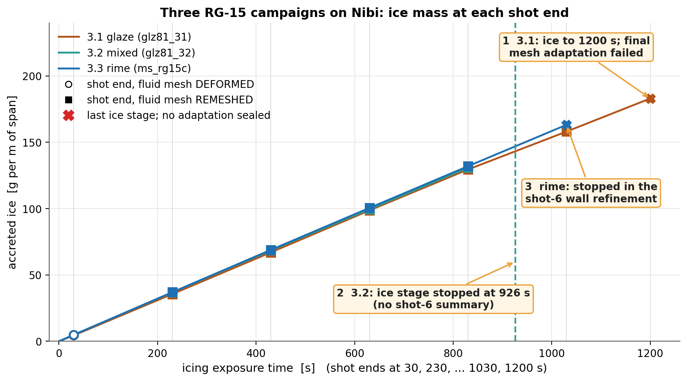
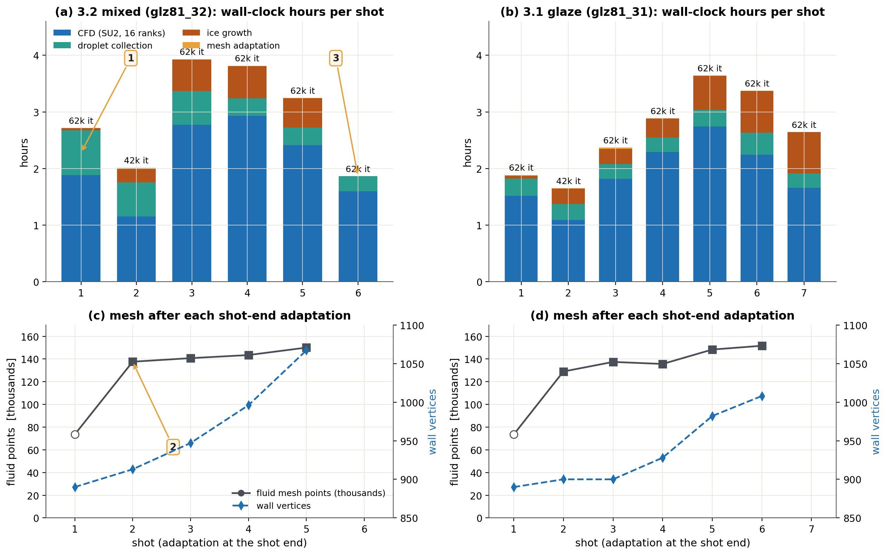
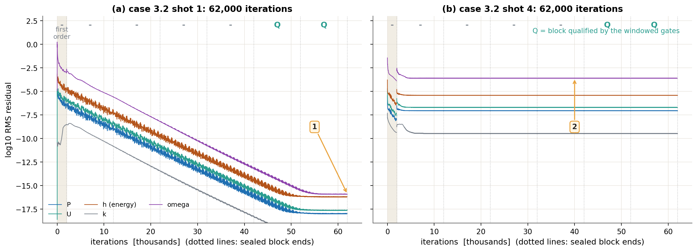

Running a campaign
A real icing exposure lasts 20 minutes of tunnel time and takes one to two days on a cluster. This page shows how the solver chops that exposure into shots, runs each shot as a chain of sealed stages that can be stopped and resumed at any moment, and what a real returned campaign looks like on disk and over time.
- The idea: shots, stages and seals Basic
- Run modes and the command line Basic
- The campaign file, field by field Intermediate
- The shot loop Intermediate
- Anatomy of a results folder Intermediate
- A real campaign, shot by shot Intermediate
- Seals, resume and identity checks Advanced
- Time budgets, walltime and launch faults Advanced
- Running on the Nibi cluster Advanced
The idea: shots, stages and seals Basic
Ice changes the shape of the wing, and the shape changes the airflow, which changes where the next ice grows. The solver cannot recompute the airflow continuously; one converged airflow solution costs one to three hours on 16 processor cores. So it uses the multishot approach: the exposure is cut into a short list of shots. In each shot the airflow and the droplet impact are computed once, on the shape at the start of the shot, and are then held fixed while ice grows for the shot's duration (for example 200 s). At the end of the shot the mesh is updated to the new iced shape and the next shot starts.
Each shot is split into stages: airflow (CFD), droplet collection, ice growth and mesh
adaptation. Every stage writes its results into its own folder and, when it has finished, writes a
small receipt file called done.json that lists the SHA-256 fingerprint of every result
file. A folder with a receipt is sealed: it is complete and will never be recomputed or
changed. A folder without one is unfinished.
This gives the campaign a simple, strong property: you can kill it at any moment, run the very same command again, and it continues from the last sealed stage. Nothing that was finished is redone, nothing unfinished is silently overwritten, and a changed input is refused.
A campaign is a to-do list of shots. Each shot is four jobs done in order: compute the air, throw the droplets, grow the ice, fix the mesh. Each finished job leaves a signed receipt. Restarting means "skip everything that has a valid receipt and carry on". That is what lets a two-day computation survive cluster time limits and node failures.
A cluster job has a hard time limit (the Nibi runs used 3-day jobs), and nodes do fail: on
2026-11-15 three running campaigns stopped at the same second with a node failure
(VALIDATION_RUN_PLAN.txt, item 5). A result that is half-written when the scheduler kills
the job must never be mistaken for a finished one. The module docstring of
icing/campaign.py states the rule: "Every stage is sealed with SHA-256 receipts;
rerunning the same command resumes. Incomplete stages are refused, never overwritten."
Run modes and the command line Basic
The program is started as python -m icing <command> (or the icing
script). The commands are defined in icing/cli.py, function main(). The
solver grew over several months, and each command belongs to a stage of that growth. All of them
need an explicit case file; none runs a default "demo".
| Command | Calls | What it is for |
|---|---|---|
run | controller.run_case | The original transactional
coupling loop (icing/controller.py): a thin layered ice model on fixed material panels,
re-run CFD every step. Kept for the early George-2 rime cases (examples/george2_rime.json).
Its docstring: "Run only with converged CFD". |
run-nodal | nodal_case.prepare_nodal_case →
nodal_run.run_nodal_exposure | Cold (rime) icing with a conducting solid:
the substrate and the ice are a finite-element mesh with heat conduction. Repeated qualified steps,
and a final CFD on the final shape. --preflight checks inputs without launching any
solver. |
init-coupled | coupled_initial.initialize_coupled_geometry |
Builds a clean starting "geometry bundle" for the phase-aware (glaze) path. No solvers. |
run-coupled | coupled_case.prepare_coupled_case →
coupled_exposure.run_coupled_exposure | Phase-aware exposure (liquid film, melting, refreezing) from an accepted bundle, refreshing the flow on every accepted geometry. The building block that the glaze campaign later reused. |
run-campaign | hpc.run_resumable(campaign.run_campaign, ...) |
The production driver. Multishot, resumable and cluster-ready. The campaign file's
ice_model chooses the ice stage: "rime" uses the conducting nodal model,
"glaze" hands the shot loop to glaze_campaign.run_glaze_shots.
--pilot swaps in the file's short pilot schedule. |
mesh-check | Mesh.read, require_valid |
Prints signed cell quality and wall topology of an SU2 mesh. Cheap; no solver. |
The run-campaign branch is three lines. The important part is the wrapper
run_resumable, explained in the walltime section: it turns a clean
"out of time" stop into the special exit status 75 that tells the cluster script to resubmit.
elif args.command=='run-campaign':
from .campaign import run_campaign
from .hpc import run_resumable
result=run_resumable(run_campaign,args.case,args.output,pilot=args.pilot)
icing/cli.py → main(); icing/campaign.py →
run_campaign(), load_campaign(); icing/glaze_campaign.py →
run_glaze_shots(); icing/hpc.py → run_resumable().
The RG-15 packages do not call the CLI; their run.py imports run_campaign
directly and adds a hash check of the frozen inputs, a comparison step and a return bundle.
The campaign file, field by field Intermediate
A campaign needs two JSON files. The nodal case describes the physics of the experiment: the
mesh, the substrate, the air, the cloud and the SU2 settings. The campaign file describes how
to run it: the shot schedule, the CFD acceptance policy, the ice-stage controls and the mesh
adaptation. Below are the real files of the RG-15 case 3.2 run on Nibi,
runs/nibi/glz81_32/package/ (trimmed where marked).
nodal_case_32.json: the experiment
{
"mesh": "mesh.su2", // clean fluid mesh (tunnel channel, generated)
"solid": "solid_32.npz", // PLA substrate mesh inside the airfoil
"flow": { "speed": 25.0, "alpha_deg": 0.0, "temperature": 269.15,
"density": 1.3112, "viscosity": 1.696e-05, "chord": 0.3,
"turbulence": "SST", "wall_temperature": 273.15,
"roughness_height": 0.0005, "roughness_model": "WILCOX1998" },
"thermal": { "evaporation": true, "relative_humidity": 1.0, "humidity_reference": "water" },
"exposure_time": 1200.0, "time_step": 4.0, "thermal_step": 0.005,
"ice_density": 917.0, "ice_conductivity": 2.2, "gravity": [0.0, -9.81],
"droplets": { "lwc": 0.00052,
"bins": [ {"diameter": 7.3e-06, "mass_fraction": 0.05}, ... 7 bins ...,
{"diameter": 8.13e-05, "mass_fraction": 0.05} ],
"inlet_center": [-0.6, 0.0], "inlet_width": 0.3, ... },
"su2": { "mpi_ranks": 6, "cfd_executable": "SU2_CFD", "def_executable": "SU2_DEF",
"mpi_executable": "srun", ... }
}- flow: 25 m/s air at 269.15 K (-4 °C), the IPW-2 case 3.2 conditions
(
data/rg15_ipw2/conditions.json).alpha_degis 0 because the 4° incidence is built into the mesh: the airfoil was rotated into the tunnel frame (tools/prepare_rg15_glaze_package.py). The wall is an isothermal 273.15 K probe used to extract the heat-transfer coefficient (see Step 3). - droplets: liquid water content 0.52 g/m³ in seven diameter bins from 7.3 to 81.3 µm.
- su2: executable names. On the cluster these are replaced through recorded environment
overrides (
icing.hpc.site_settings), which is whympi_ranks: 6here became 16 on Nibi.
campaign_32.json: how to run it
{
"nodal_case": "nodal_case_32.json",
"schedule": [30, 200, 200, 200, 200, 200, 170], // seven shots, 1,200 s in total
"seed_restart": null, // cold CFD start
"cfd_template": "template_32.cfg",
"initial_mesh": "source", // use mesh.su2 as given
"cfd": { "first_block": 2000, "block": 10000, "max_iterations": 1000000,
"max_solver_hours": 48, "first_order_after_remesh": 2000,
"gates": true, "gate_mode": "windowed", "window_blocks": 2, "consecutive": 2,
"mean_cl_rel": 0.001, "mean_cd_rel": 0.005, "htc_rel_l1": 0.005, "htc_peak": 0.02,
"cp_rel_l1": 0.1, "cp_peak": 0.1, "residual_rise": 0.2, "residual_rise_blocks": 5, ... },
"ice": { "increment": 4.0, "thermal_step": 0.005, "density": 917.0, "conductivity": 2.2,
"mass_gate": 1e-08, "energy_gate": 0.01, "local_recovery": true },
"collection_seeds": 25664, // seeds per droplet bin
"mesh_adaptation": { "wall": {"design_factor": 1.0, "max_turn_deg": 5, "grading": 1.2, ...},
"remesh": {"target_yplus": 1.0, "growth": 1.2, ...}, "prefer": "AUTO" },
"deformation_methods": ["RBF", "ELASTIC"], "rbf_radius": 0.6,
"pilot": { "schedule": [1.0, 1.0], "cfd": {"first_block": 10, "max_iterations": 3010, "gates": false, ...},
"ice": {"increment": 0.5}, "collection_seeds": 64, "prefer_by_shot": ["AUTO", "REMESH"] },
"ice_model": "glaze",
"glaze": { "liquid_conductivity": 0.56, "outlet_panels": "sharp_corners",
"solid_remesh": {"min_new_nodes": 500}, "wall_refinement": true,
"film_air_coupling": {}, "front_merging": {}, ... }
}| Field | Meaning | Read by |
|---|---|---|
schedule | Shot durations in seconds. A short first shot (30 s) lets the clean-shape flow act only briefly before the first ice shape is fed back. | load_campaign |
cfd | The CFDPolicy: block lengths and the acceptance gates. |
CFDPolicy(**case['cfd']) |
ice | The IcePolicy: growth increment (4 s of exposure per
geometry update), thermal step, ice properties and the cumulative conservation gates. |
IcePolicy(**case['ice']) |
collection_seeds | Droplet seeds per bin (25,664 × 7 bins = 179,648 trajectories per shot, the number printed in the Nibi log). | run_collection |
mesh_adaptation | Wall refinement rules and the y⁺-targeted remesher
(Step 9). prefer: AUTO tries to deform first and remeshes if
that fails. | MeshAdaptation |
pilot | Overrides for a cheap integration check: two 1 s shots, tiny CFD blocks, gates off, 64 seeds per bin, and a forced REMESH in shot 2 so that every code path runs. | run_campaign(pilot=True) |
ice_model, glaze | Selects the glaze ice stage and its
controls (validated by glaze_controls against GLAZE_DEFAULTS). |
glaze_campaign |
gate_revision | Optional. An authorised, logged change of CFD acceptance limits for a campaign that is already running (see identity checks). | check_identity |
load_campaign refuses any unknown top-level field, a non-positive shot duration, an
unknown ice_model, or glaze controls without "ice_model": "glaze". A typo
therefore stops the run before any solver starts, rather than being silently ignored.
The two policies
@dataclass(frozen=True)
class CFDPolicy:
first_block: int = 2000
block: int = 10000
max_iterations: int = 1_000_000
max_solver_hours: float = 48.
consecutive: int = 2
first_order_after_remesh: int = 2000
gates: bool = True # False only for integration pilots: accept at the cap
gate_mode: str = 'instantaneous' # or 'load_based', 'windowed'
window_blocks: int = 2 # windowed only
mean_cl_rel: float = .001
mean_cd_rel: float = .005
residual_rise: float = .2 # log10 units
...
@dataclass(frozen=True)
class IcePolicy:
increment: float = 4. # s of exposure per growth update (held loads)
thermal_step: float = .005
density: float = 917.
conductivity: float = 2.2
mass_gate: float = 1e-8 # kg/m cumulative residual
energy_gate: float = .01 # J/m cumulative residual
local_recovery: bool = FalseCFDPolicy says how long each SU2 block is and when the flow counts as finished. In the
windowed mode used on Nibi, residuals only guard against divergence (no equation's
block-median log residual may rise by more than 0.2 over 5 blocks). Acceptance compares averages:
the mean lift and drag of the last two safe second-order blocks against the two before, and the wall
profiles of heat-transfer coefficient (HTC), shear and pressure coefficient. The flow is accepted
after two consecutive qualified blocks. IcePolicy holds the ice-stage clock: loads are held
for 4 s of exposure per geometry update, the thermal solver steps at 5 ms, and the cumulative mass
and energy residuals must stay below 10⁻⁸ kg/m and 0.01 J/m or the run stops.
- The CFD gates are the project's preliminary acceptance policy, not proof of a converged
physical solution. Every
assessment.jsoncarries"physical_validation": false. - Within a shot the airflow and droplet loads are frozen (quasi-steady assumption). The shot length is a numerical choice; shot-length sensitivity is not established by these runs.
The shot loop Intermediate
Figure 1 shows what run_campaign does, with the folder each step writes. Gold seals mark
the done.json receipts.
campaign.run_campaign (rime) and
glaze_campaign.run_glaze_shots (glaze), which are line-for-line parallel. Stage 4 is the
only one that differs between rime and glaze. Gold circles are seals (done.json).
The arrow on the right is the feedback that makes this "multishot": the next shot's CFD runs on the
mesh produced by this shot's adaptation.Here is the glaze loop with only the orchestration kept. Read it as the figure, top to bottom.
def run_glaze_shots(c, out, site, timings, prefer_by_shot, mesh_path, seed, first_order):
initial = out / 'initial_glaze'
run_glaze_initial(out / 'initial' / 'solid.json', mesh_path, initial, c)
state_dir, start = initial, 0.
for index, duration in enumerate(c.schedule, 1):
folder = out / f'shot_{index:02d}'
end = start + duration
mesh = Mesh.read(mesh_path)
if not _done(folder):
if index > 1: # 1 warm start
prev = out / f'shot_{index - 1:02d}'
run_warm_start(prev / 'flow' / 'restart_flow.dat', Mesh.read(prev / 'flow' / 'mesh.su2'),
mesh_path, folder / 'warm')
seed = folder / 'warm' / 'seed.dat'
run_cfd(mesh, seed, folder / 'flow', c, site, timings, first_order) # 2
run_collection(mesh, folder / 'flow', folder / 'collect', c, site, timings) # 3
run_glaze_ice(state_dir / 'history.json', state_dir / 'surface.json', mesh, # 4
folder / 'flow', folder / 'collect', folder / 'ice', c, start, end, timings)
if not _done(folder / 'adapt'): # 5
run_with_launch_retries(folder / 'adapt', lambda: run_glaze_adaptation(...), ...)
_seal(folder, ['flow/done.json', 'collect/done.json', 'ice/done.json', 'adapt/done.json'],
index=index, start_s=start, end_s=end, ice_model='glaze')
decision = _read(folder / 'adapt' / 'done.json')['decision']
mesh_path, state_dir = folder / 'adapt' / 'mesh.su2', folder / 'adapt'
first_order = c.cfd.first_order_after_remesh if decision == 'REMESH' else 0
start = endEach run_* function starts with if _done(dest): return. So on a restart the
loop simply walks past every sealed stage in milliseconds and resumes at the first unsealed one.
Notice the last line but one: after a REMESH the new mesh has no matching flow history, so the
next shot's CFD starts with 2,000 first-order iterations; after a DEFORM the old solution maps
node-for-node and second order starts immediately.
What each stage does
- Initial mesh.
initial/holds the shot-1 fluid mesh and the clean substrate state. Withinitial_mesh: "source"the given mesh is copied; with"generate"(the rime campaigns) a two-iteration SU2 "shear probe" supplies the wall shear for a y⁺ target and the campaign's own remesher builds the mesh (generate_initial_mesh). For glaze,run_glaze_initialconverts the clean state into a phase-aware thermal history ininitial_glaze/. - Warm start (
run_warm_start→su2_warm_start.map_restart_to_mesh). The previous shot's converged SU2 restart is interpolated onto the new mesh. Near the wall each node samples the old field at the same distance from the old wall, because the wall itself has moved outward by up to millimetres. "A warm start only changes the initial guess; the same acceptance gates decide the solution." The shot-6 report of case 3.2 lists 150,023 nodes, 14,062 mapped wall-relative and a largest wall gap of 2.1 mm. - CFD (
run_cfd). SU2 runs in blocks: first 2,000 iterations, then 10,000 at a time. Each block is a separate folderblock_NNNNNNNnamed by its final iteration count, restarted from the previous block'srestart_flow.datand sealed with an anchor (the hash of its seed, start, end and order) so the restart chain cannot be mixed up. After each block, safety screens (volume temperature, positive HTC) and the gates run. When the gates accept, the last block's files are copied up intoflow/and sealed. - Collection (
run_collection). Lagrangian droplets on the accepted flow field, in batches that checkpoint themselves (collect/batches/). The inlet-capture guard must show no impacts at the edge of the seeding band, or the stage fails. Output:forcing.npzwith mass and kinetic-energy rates per wall panel. - Ice (
run_icefor rime,run_glaze_icefor glaze). The shot is integrated in increments ofice.increment= 4 s with the loads held. After each increment the state is written to one of two alternating slots and a pointer fileprogress.jsonnames the latest one (explained below). A reducible failure halves the increment; four successes in a row double it back (REGROW_AFTER = 4). - Adaptation (
run_adaptation/run_glaze_adaptation). Stretched iced wall panels are split, and the fluid mesh is either deformed with SU2_DEF or rebuilt with explicit wall layers and Gmsh (Step 9). Every remesh starts from the original outer boundary, "so mesh size cannot compound shot to shot". The decision is written into the seal:"decision": "REMESH".
Anatomy of a results folder Intermediate
Figure 2 is the folder that the case 3.2 run left on Nibi, as returned in
runs/nibi/glz81_32/failure_27435273_return.tar.gz (1.1 GB; most of it is droplet batch
files and CFD volume fields). The run folder around it is shown too.
runs/nibi/glz81_32), listed
from the archive. File names are real; the ellipses stand for repeated blocks and remesh folders.
The numbered call-outs are explained under the tree.| File | What it holds | Written by |
|---|---|---|
done.json | The seal: {"files": {name: sha256}, ...extra}.
Extra fields record e.g. iterations, solver_seconds,
accepted_by (flow) or decision (adapt). | _seal |
assessment.json | Per CFD block: temperature screen, convergence, HTC
stability, max y⁺, physical_validation: false. | run_cfd |
gate.json | The acceptance verdict, recomputed from the sealed files under the active policy. Deliberately not part of the seal, so an authorised gate revision can re-judge old blocks. | evaluate_block |
launch.json, execution.json, solver.log |
The exact command, timing and return code of each SU2 launch. | su2.run_executable |
audit.json | Collection: inlet-capture audit, captured mass rate, seeds per
bin, workers, elapsed time, collection_qualified: false. | run_collection |
ice/summary.json | Glaze: solid ice, column ice and liquid (kg/m), the water ledger (incoming, vapour, runoff, stripped), halvings, solver paths, front merging and seal counts, wall-clock cost. | run_glaze_ice |
adapt/quality.json | Cell quality of the new mesh, the deform/remesh attempts and reasons, wall vertices, fluid points and cells, wall-refinement report. | run_glaze_adaptation |
surface.csv | The iced wall as x_m,y_m: the outline plotted on
the next page. | ice stages |
A real campaign, shot by shot Intermediate
The v8.1 glaze package (rg15_glaze_ipw2_v81_20261114, code 82a5d30) ran cases 3.1 and 3.2
on Nibi from 14 to 16 November 2026, alongside the rime campaign ms_rg15c (case 3.3).
All three were resumed after the node failure of 15 November and all three ended in a failure that
was later diagnosed (docs/NIBI_RETURN_2026-11-16.md,
docs/PHYSICS_REVIEW.md 2026-11-17). The numbers below come straight from the sealed
receipts and summaries.

adapt/quality.json is "wall vertices changed" (wall refinement or front merging altered
the wall, which a deformation cannot follow); at the end of 3.1 shot 3 both deformation methods were
tried and refused because the predicted y⁺ (2.05 and 2.09) exceeded twice the target.
(1) Case 3.1 grew ice to 1200 s (183.0 g/m), then the final adaptation failed with a
self-intersecting wall layer across a closed crevice. (2) Case 3.2 stopped inside shot 6 at
926 s on an energy-audit failure caused by a degenerate fill triangle; its last recorded mass is the
830 s value, 130.8 g/m. (3) The rime run reached 1030 s (163.2 g/m) and stopped in the
wall refinement before shot 7. The three curves almost coincide: at these conditions nearly all
impinging water ends up as ice, so mass is a weak discriminator between the regimes; the shapes
differ (Step 12). Data: shot_NN/ice/summary.json,
shot_NN/adapt/done.json; script _build/fig_campaign.py.| 3.2 shot | Time [s] | CFD iterations | CFD [h] | Collection [h] | Ice [h] | Total ice [g/m] | Adaptation | Wall vertices | Fluid points |
|---|---|---|---|---|---|---|---|---|---|
| 1 | 0-30 | 62,000 | 1.88 | 0.79 | 0.04 | 4.87 | DEFORM | 890 | 73,506 |
| 2 | 30-230 | 42,000 | 1.15 | 0.60 | 0.25 | 36.83 | REMESH | 913 | 137,609 |
| 3 | 230-430 | 62,000 | 2.77 | 0.60 | 0.55 | 68.47 | REMESH | 947 | 140,741 |
| 4 | 430-630 | 62,000 | 2.93 | 0.31 | 0.57 | 99.52 | REMESH | 996 | 143,460 |
| 5 | 630-830 | 62,000 | 2.41 | 0.31 | 0.52 | 130.83 | REMESH | 1,067 | 150,023 |
| 6 | 830-(926) | 62,000 | 1.60 | 0.27 | failed | – | – | – | – |
CFD hours are SU2 solver time summed over the blocks (solver_seconds in
flow/done.json); collection and ice hours are the stages' own elapsed times
(collect/audit.json, ice/summary.json → cost.ice_wall_seconds).
Adaptation took 21-26 s per shot. The wall carried 890 vertices at the start; wall refinement added
vertices at every shot end, and front merging removed some inside shots (8, 18 and 40 vertices in shots
3, 4 and 5).


gate.json). (1) Shot 1 converges smoothly to residuals near
10⁻¹⁶; the gates qualify blocks 6 and 7 and the shot is accepted at 62,000 iterations.
(2) In shot 4 every residual stops falling after about 5,000 iterations and stays exactly
level (worst residual -3.602 in every block, from the log). The windowed gates treat residuals only
as a divergence alarm, and lift, drag and the wall profiles stopped changing, so shot 4 was accepted
at the same count. A flat plateau like this means the iteration has stalled, not that it has
converged in the usual sense; the project's documents do not diagnose it, so it is recorded
here as an open observation. The shot-4 history after the resume is the re-run block; the
interrupted one was set aside (Figure 2, call-out 6).- These are integration results. No run in this campaign completed; each stopped on a defect that
was then fixed on main (R40, R41 in
docs/GLAZE_ROBUSTNESS.md, and the solid cavity fix for rime indocs/PHYSICS_REVIEW.md2026-11-17). The fixes were checked by local replays without CFD. - Timings depend on the node, the rank count (16) and the SU2 build (8.4.0); they are not benchmarks.
Seals, resume and identity checks Advanced
Three tiny functions carry the whole restart logic. They live at the top of
icing/campaign.py and the glaze module imports them.
def _seal(folder, files, **extra):
atomic_json(folder / 'done.json', _plain(dict(files={k: digest(folder / k) for k in files}, **extra)))
def _done(folder):
if not (folder / 'done.json').is_file():
return False
for name, value in _read(folder / 'done.json')['files'].items():
if digest(folder / name) != value:
raise ValueError(f'Sealed file changed: {folder / name}')
return True
def _fresh(folder):
"""A stage folder must be new; an unsealed existing one is preserved for review."""
if folder.exists():
raise RuntimeError(f'Incomplete stage {folder}; preserved for review, not overwritten')
folder.mkdir(parents=True)_seal writes the receipt last, after every listed file exists. It goes through
integrity.atomic_json, which writes to a .tmp file, flushes it to disk with
fsync and then renames it into place. A crash therefore leaves either no receipt or a
complete one, never half of one. _done does not just test that the receipt exists: it
re-hashes every listed file, so a result that was edited or corrupted after sealing stops the run with
"Sealed file changed". _fresh is the guard for stages that must start from nothing: a
leftover folder is refused, not overwritten.
Two-slot checkpoints inside the ice stage
The ice stage of one shot runs 50 increments and can take hours, so it is not "all or nothing".
After increment n the state goes into slot_{n mod 2}, then
progress.json is atomically rewritten to name that slot, its hash, the tick count and the
current increment length. The other slot still holds increment n-1. If the job dies while
writing a slot, the pointer still names the previous, complete one. On restart the stage reads the
pointer, verifies the slot's hash ("Corrupt latest glaze checkpoint" otherwise) and continues. Time is
counted in integer ticks of the thermal step (200 ticks per second at 5 ms), so a shot of 200 s ends
exactly at 200 s and not at 199.99999.
Identity: refusing changed inputs
Before any stage runs, check_identity compares the inputs with the record stored in
results_32/campaign.json at the first start. The record has two parts:
- computation: a hash of the campaign file without its revisable gate limits, the hashes of the nodal case, the CFD template and the seed restart, the schedule, the ice policy, the seeds per bin, the SHA-256 of the SU2_CFD executable and the MPI rank count. Any change: "Campaign inputs, executable or rank count changed; start a new output folder".
- gates: the CFD acceptance limits (
REVISABLE_CFD). These decide acceptance but never change a computed block, so they may change mid-campaign, but only with agate_revisionrecord naming who authorised it, when and why. The revision is appended to the log incampaign.jsonand the stored blocks are re-judged under the new limits.
The model code itself is guarded one level down. Every thermal checkpoint stores a digest of the
executable model source (integrity.model_sources: an AST hash with comments and docstrings
stripped). Loading a checkpoint written by different model code is refused. The orchestration
modules (campaign.py, hpc.py, glaze_campaign.py, listed in
ORCHESTRATION_SOURCES) are exempt, because "they schedule and gate work but compute no
physics" (campaign.load_state, glaze_campaign.load_glaze_state).
Setting aside incomplete work
When the scheduler kills a job in the middle of an SU2 block, that block folder exists but has no
seal. The next job would refuse it ("Incomplete CFD block ... preserved for review"). The cure is to
rename, never delete: campaign.set_aside_incomplete (and the cluster script
hpc/nibi/resume.sh) renames only the one trailing unsealed block of each unfinished shot to
block_NNNNNNN.interrupted_<UTC time> and logs it. That is exactly what happened in
shot 4 of case 3.2 on 15 November (Figure 2, call-out 6). Any other unsealed block is refused for
manual review. The glaze adaptation stage, which is a pure function of sealed inputs, sets aside its
own unsealed earlier attempt as adapt.incomplete_<time>
(glaze_campaign._set_aside_incomplete), a fix that came from run glz6_32, where a
half-written folder blocked every resubmission.
A failed or interrupted folder is evidence. Several fixes in
docs/GLAZE_ROBUSTNESS.md were found by reading such folders. Renaming keeps the evidence
and still lets the run continue from the last trustworthy point.
Time budgets, walltime and launch faults Advanced
A stage killed by the scheduler is lost work, so the campaign tries never to start a stage that
cannot finish before the job's deadline. Before each stage it asks hpc.require_time
with an estimate. If the estimate does not fit, it raises WalltimeExhausted;
run_resumable catches it and exits with status 75; the batch script resubmits the same
command, and the new job skips every sealed stage.
RESUBMIT_EXIT_CODE = 75 # EX_TEMPFAIL: stopped cleanly; resubmit the same command.
def require_time(estimate_seconds, *, label='next stage', environ=None, now=None):
window = job_window(environ)
if window is not None and estimate_seconds > window:
raise WalltimeTooShort(f'{label} needs about {estimate_seconds:.0f} s but a whole job allows only '
f'{window:.0f} s; submit with a longer --time (or a smaller --margin)')
remaining = seconds_remaining(environ, now)
if estimate_seconds > remaining:
raise WalltimeExhausted(f'{label} needs about {estimate_seconds:.0f} s but only '
f'{max(remaining, 0.):.0f} s remain before the job deadline')
return remaining
def run_resumable(main, *args, **kwargs):
try:
return main(*args, **kwargs)
except WalltimeExhausted as stop:
print(f'Stopped cleanly for resubmission: {stop}', file=sys.stderr, flush=True)
raise SystemExit(RESUBMIT_EXIT_CODE) from NoneThere are two different "no time" errors. WalltimeExhausted means "not enough time left
in this job": resubmit. WalltimeTooShort means "this stage would not fit even in
a fresh job": resubmitting would loop forever, so it is a real failure. Any other exception also
propagates: "a real failure must not be resubmitted".
Where the estimates come from
Timings keeps the longest observed duration of each stage kind in
timings.json and returns it times a safety factor SAFETY = 1.5. Before a
stage kind has been timed, defaults apply (30 min for the first CFD block, 4 h for collection, 20 min
per ice increment, 30 min for adaptation). The case 3.2 run ended with:
{ "cfd_2000": 636.2, "cfd_10000": 3023.4, "collect": 2842.0, "ice": 95.2, "adapt": 26.1 }So the next 10,000-iteration block would only start with at least 1.5 × 3,023 s ≈ 76 min left.
cfd_block_estimate handles a block length that has never been timed: it scales the first
block linearly, but caps the result at half a job window. The reason is in its docstring: scaling a
10-iteration pilot block (which is mostly startup and output time) gave 2,100 s against 87 s
measured, and two pilots were refused at 8,870 s and 21,045 s. SU2 itself is also bounded:
solver_timeout gives it the smaller of its budget and the time left, so a solver stopped at
the deadline leaves a recorded timed_out execution rather than an unrecorded kill.
MPI launch faults
On Nibi, srun sometimes "started 0 of N tasks" while still exiting 0 (seen in ms_rg15,
glz6_32 and msb_pilot on 2026-11-11). run_with_launch_retries recognises a stage folder
whose launch never started SU2, renames it *.launch_failed_<time>, logs it in
launch_failures.json, waits 120 s and tries again. After 3 failures in one job it raises
LaunchUnavailable (a subclass of WalltimeExhausted, so the job resubmits for
a fresh allocation); after 9 failures of the same stage it stops for review.
Running on the Nibi cluster Advanced
Nibi is an Alliance (Digital Research Alliance of Canada) cluster with 192-core nodes, Slurm, and
modules for SU2 8.4.0 and Gmsh 4.13.1 (hpc/nibi/README.md). The workflow is built so that
what runs there is exactly what was prepared and reviewed on the PC.
- Install (
hpc/nibi/install.sh). Checks out an exact commit, detached, refusing a checkout with local edits, builds a virtual environment and records it in~/icing/install.json. A one-off toolchain preflight (preflight.sbatch/preflight.py: SU2 CFD and DEF undersrun, rough-wall SST, Gmsh, VTK) passed on 2026-11-07 (job 26429985). - Freeze a package on the PC. A preparation tool (e.g.
tools/prepare_rg15_glaze_package.py) writes the case files, the mesh, arun.py, the experiment planEXPERIMENT_PLAN.txtand amanifest.jsonwith the SHA-256 of every input.run.pychecks the manifest before every command, so a frozen input cannot drift. - Copy and submit (
push_package.ps1, thensubmit.sh).submit.shcopies the package and a read-only snapshot of the installed code into$SCRATCH/icing_runs/<name>, writesprovenance.json(commit and hashes) andjob.env, and submitsrun_package.sbatch. The pilot always runs first; the full run only after itsCOMPLETEDfile exists. - Chained jobs (
run_package.sbatch). Each job derivesICING_JOB_DEADLINEfrom the Slurm time limit minus a margin (3,600 s for the RG-15 runs), exports the site executables, refuses to continue if they differ from the first job's (executables.json), and runs the package command. Then it acts on the exit status. - Return. On success
run.pybundles a small return archive; on failure the EXIT trap writesFAILEDandarchive_failure.shpacks everything intofailure_<jobid>_return.tar.gz. The user drops returned files intofrom_nibi/; they are moved, bytes unchanged, toruns/nibi/<run name>/before anything reads them (standing rule inAGENTS.md).
case "$status" in
0) date -Is > "$run/COMPLETED"; echo "Run complete." ;;
75)
count="$(wc -l < "$run/jobs.log")"
if [ "$count" -ge "$ICING_MAX_JOBS" ]; then
echo "Reached $ICING_MAX_JOBS chained jobs; stopped for review" | tee "$run/STOPPED"
else
next="$(sbatch --parsable --dependency="afterany:$SLURM_JOB_ID" $ICING_SBATCH_ARGS \
"$run/code/hpc/nibi/run_package.sbatch" "$run")" || { echo "resubmission failed" > "$run/FAILED"; exit 1; }
echo "$next submitted $(date -Is) after $SLURM_JOB_ID" >> "$run/submissions.log"
fi
status=0 ;;
*) echo "exit $status in job $SLURM_JOB_ID" > "$run/FAILED" ;;
esacThe run ends in exactly one of three marker files: COMPLETED, STOPPED (the
chain limit, 8 jobs for the RG-15 runs) or FAILED. A node failure leaves none of them
cleanly; resume.sh then checks that the stop was the cluster's fault (a signal exit, not a
model error), sets aside the trailing unsealed work and resubmits with the run's own frozen runner.
For glz81_32 the record reads: job 27359690 submitted 2026-11-14 20:23, resumed as job 27435273 on
2026-11-15 09:42 after the node failure, and FAILED "exit 1 in job 27435273" on
2026-11-16 16:26 (runs/nibi/glz81_32/submissions.log, jobs.log,
FAILED).
On the PC you freeze a package and write down, in advance, what you expect it to show. On the cluster a job runs until it is nearly out of time, stops cleanly between stages, and queues its own successor. When something goes wrong for a physics or code reason, the chain stops and everything is packed up and sent home for diagnosis; nothing is retried blindly.
- Nibi runs SU2 8.4.0 while the workstation uses 8.5.0. A 172,000-iteration replay matched to
about 10⁻⁸ in forces and wall fields (
hpc/nibi/README.md), so results may be pooled, but one run must never mix builds;run_package.sbatchenforces that. - The prospective experiment plan that every package carries is described on the next page.